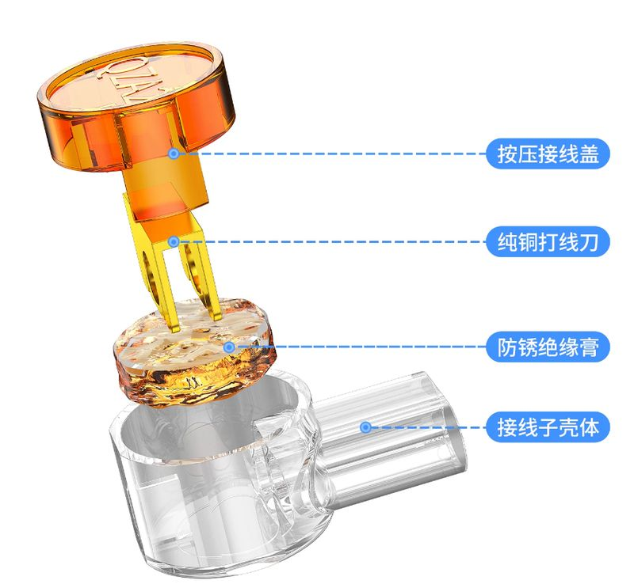

产品简介
本说明书适用于 K1、K2 系列接线端子。该系列产品采用免焊接的快速接线方式，用于信号线及小电流电源线的对接与转接，接线简单、连接牢固，可广泛用于智能家居、安防布线和工业控制等场景。
| 项目 | K1 接线端子 | K2 接线端子 |
|---|
| 外壳材质 | PC+PP 复合材质 | PC+PP 复合材质 |
| 接线片 | 纯铜单卡刀 | 纯铜双卡刀 |
| 支持线径 | 0.4—0.7mm | 0.4—0.9mm |
| 外形尺寸 | 长12mm、宽6mm | 长13.5mm、宽6.6mm |
| 接线方式 | 剥线直插、钳压固定 | 剥线推入、双刀咬合 |
| 主要用途 | 细线径快速接线 | 宽线径兼容、高可靠接线 |
产品特点
- 阻燃绝缘外壳：PC+PP 复合材质，绝缘性好、阻燃抗冲击，长时间工作不易破裂。
- 纯铜高导接线片：导电率高、电阻小，有效减少发热，抗氧化、寿命长。
- 小巧迷你：长度仅 12—13.5mm，适合空间狭小的电气盒和智能家居布线。
- K2 双卡刀设计：双刀片咬合力更强，适合有轻微震动的场景，长期使用不掉线。

图3 K2 双卡刀结构示意
功能说明
K1 接线端子
单卡刀设计，针对 0.4—0.7mm 细线径，精准刺破线皮、紧密咬合线芯，插拔顺畅，适合快速安装。
K2 接线端子
双卡刀结构，双点接触咬合，接触面积更大，接触电阻更低，防松动防脱落能力翻倍。支持 0.4—0.9mm 宽线径兼容。
适用场景
K1 接线端子
智能门锁内部接线、智能音箱、门禁对讲机等设备的信号线连接。线径通常在 0.5mm 左右，单卡刀完全胜任。
K2 接线端子
工厂设备控制柜、配电箱内的信号或小电流电源线转接。工业环境可靠性要求高，K2 双重固定提供稳定连接。
使用教程
注意：接线前请先断开电源，确保在断电状态下操作。
K1 接线步骤
- 剥线：用剥线钳剥去导线端头绝缘皮，注意不要剪断或损伤内部铜芯。
- 处理线芯：多股细软线剥皮后，用手将铜丝顺一个方向拧紧，防止散开。
- 插入：将铜芯对准 K1 端子进线孔，用力直插到底，确保到达单卡刀位置。
- 压接：用老虎钳或尖嘴钳夹住端子，稍用力压接一下即可。
K2 接线步骤
- 剥线：剥去导线端头约 9—12mm 的绝缘皮。
- 理线：多股软线必须拧紧；单股硬线确保表面平直，让两把刀片同时刺破咬合。
- 插入：将导线对准进线孔平稳推入，让双卡刀刺破绝缘层并紧紧夹住线芯。
- 拉拔测试：接好后稍用力拉拽导线，纹丝不动说明双点咬合牢固；松动则拔出重插。
常见问题
K2 双卡刀比单卡刀好在哪里？
双倍稳固、低阻不发热。双卡刀提供两个咬合点，接触面积大一倍，接触电阻更小；抗拉拔和抗震动能力更强。
PC+PP 材质有什么好处？
良好的绝缘性和阻燃性，保障接完线后使用安全。
K1 能接 0.8mm 或 0.9mm 的粗线吗？
不能硬塞。硬塞会导致插不到底、刀片咬合不到位，甚至撑裂外壳。接粗线必须选 K2。
为什么 K2 接完线一定要做拉拔测试？
因为 K2 是双刀结构，必须确保线深插到底，让两个刀片都刺破线皮。稍用力拉拽，不松动说明双点咬合到位。
震动环境能用 K1 吗？
不太建议。K1 单卡刀抗拉拔能力有限，震动环境极易松脱，建议改用 K2，或接好后用扎带固定线缆。
注意事项
- 按线径选型：K1 支持 0.4—0.7mm，K2 支持 0.4—0.9mm，切勿硬塞粗线。
- 多股软线剥皮后必须拧紧再插入，避免铜丝散开造成接触不良。
- 接线前务必断开电源，断电操作，确保用电安全。
- K2 接线完成后应进行拉拔测试，确认咬合到位、无松动。
- 震动或拉扯环境建议选 K2，或接好后用扎带固定线缆。
质保：1年质保，1年内提供换新服务，凭保修卡或订单申请售后。